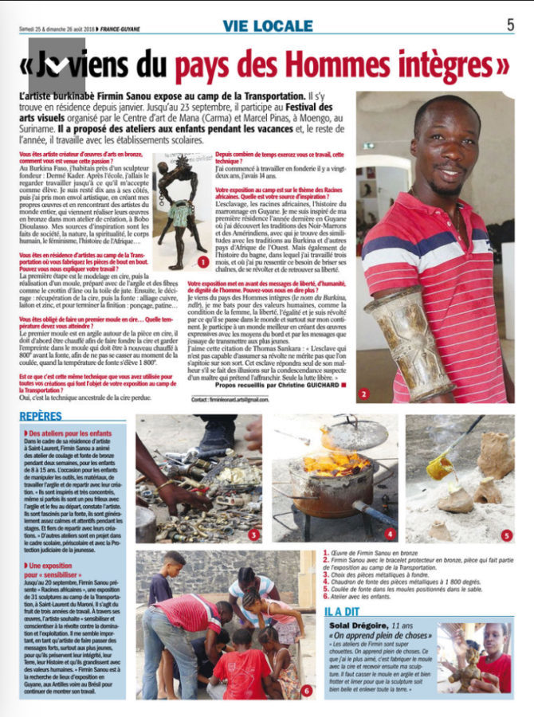

Four steps, one single gesture
Each requires precision, patience and finesse. From wax modeling to the ultimate patina, the sculpture is built with matter, time and fire.

Wax modeling
The artist sculpts a model in beeswax, translating the idea into volume with precision. Wax, soft and malleable when warm, allows for a fineness of detail impossible to achieve directly in metal.
This is where the form is born: the hand becomes the first editor, removing, adding, modeling until the right balance.
Duration: from several days to several weeks depending on complexity

The clay mold
The wax model is wrapped in three successive clay layers. The first, very fine, hugs every detail. The following ones, thicker, reinforce the structure.
Once dry, the whole forms a compact block that still contains the wax, ready to give up its place.
Drying: several days in the open air

Dewaxing & pouring
The heated mold releases the wax, which flows out through vents. The piece becomes hollow: this is the “lost” wax.
Molten bronze at 1800° is then poured at 800° into the incandescent mold. The metal fills the exact place of the wax, down to the smallest details.
The crucial moment: a few seconds decide everything

Finishing & patina
Breaking the mold reveals the piece. The sculptor enters the final phase: sanding, chiseling, polishing give the work its definitive skin.
The patina, applied warm with oxides, then awakens shadows and reflections. Each patina tells a story: black bronze, verdigris, golden, raw.
Finishing: several days of meticulous work